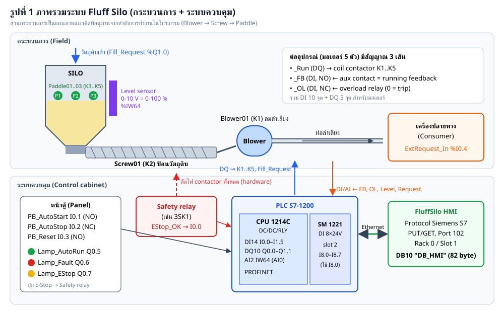
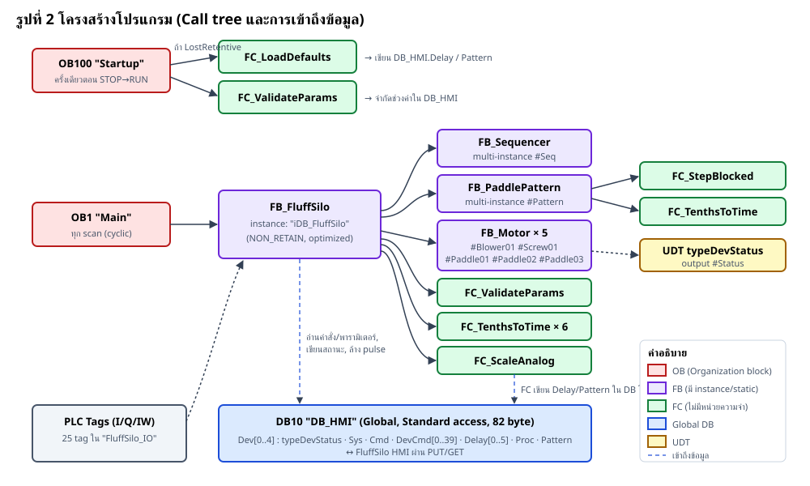
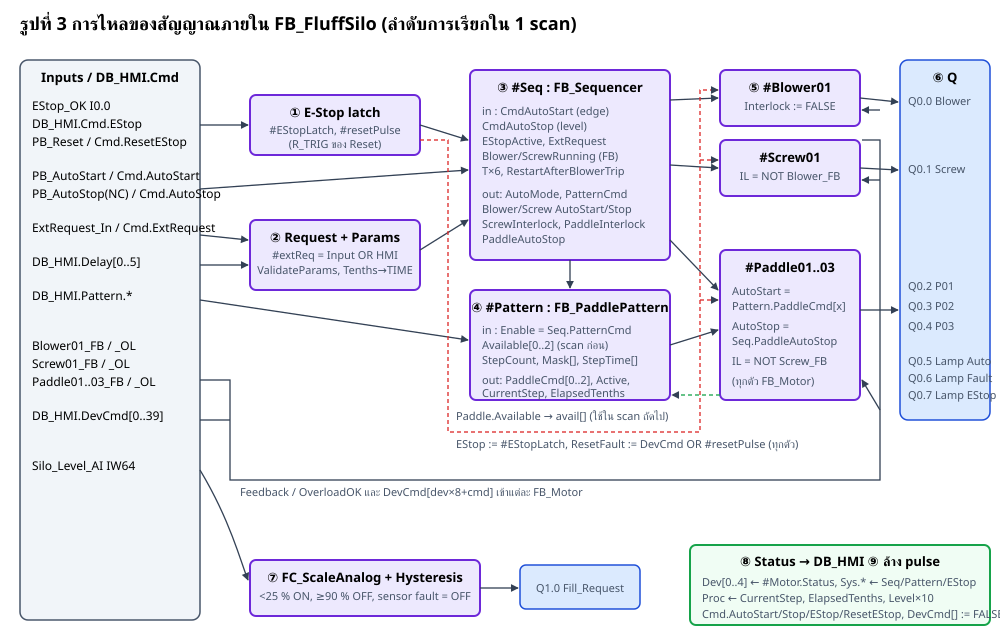
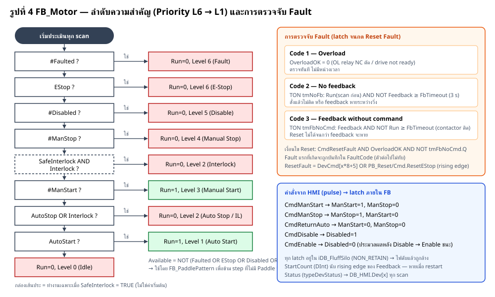
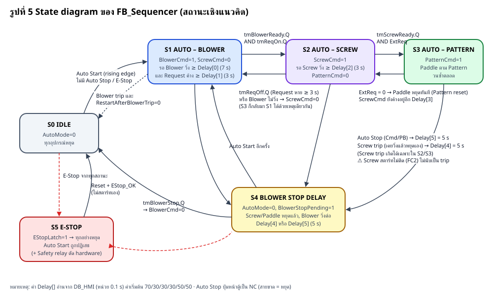
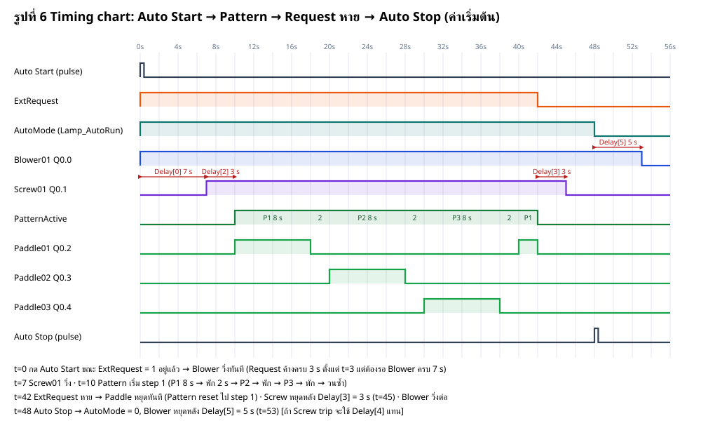
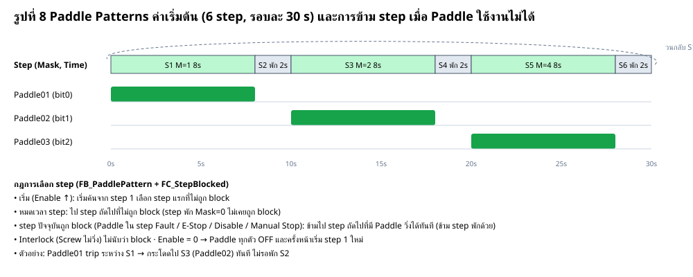
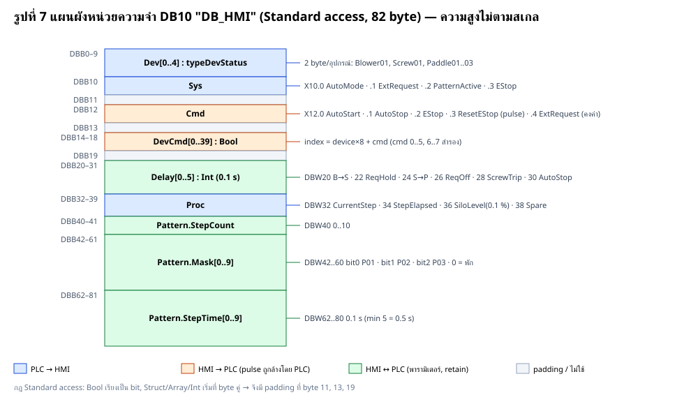

รายงานวิเคราะห์โฟลเดอร์ PLC_S7-1200 Fluff Silo System — Siemens S7-1200 / SCL
วันที่ 18 ตุลาคม 2026 แหล่งข้อมูล C:\Users\MS\Desktop\SCL compiler\PLC_S7-1200 ขอบเขต 17 ไฟล์ · SCL 1051 บรรทัด · 14 block · 25 I/O tag ภาพประกอบ 8 รูป (images/*.svg, *.png)
สารบัญ
1. บทสรุป (Executive Summary)
2. รายการไฟล์ในโฟลเดอร์
3. Hardware และ I/O
4. สถาปัตยกรรมซอฟต์แวร์
5. รายละเอียดแต่ละ Block
6. Interface กับ HMI — DB10 "DB_HMI"
7. การตั้งค่า (Options)
8. พฤติกรรมของระบบตามสถานการณ์
9. ผลการตรวจสอบโค้ด (Code Review Findings)
10. แนวทางการพัฒนาต่อ
11. ขั้นตอนนำเข้า TIA Portal (สรุปจาก README)
12. Checklist ทดสอบหน้างาน
13. ข้อควรระวังด้านความปลอดภัย
14. รายการภาพประกอบ
1. บทสรุป (Executive Summary)
โฟลเดอร์ PLC_S7-1200 คือชุดโปรแกรม PLC สำหรับระบบ Fluff Silo บน Siemens S7-1200 เขียนด้วยภาษา SCL ในรูปแบบ External source (นำเข้า TIA Portal V16 ขึ้นไป แล้ว Generate blocks from source) ควบคุมอุปกรณ์ 5 ตัว ได้แก่ Blower01, Screw01, Paddle01, Paddle02 และ Paddle03 ระบบมีลำดับ Auto Start / Auto Stop, Paddle Patterns ที่ตั้งค่าได้ (สูงสุด 10 step), ระบบ Priority L1–L6 ต่ออุปกรณ์, การตรวจจับ Fault จาก overload และ running feedback, การควบคุมระดับไซโล (Fill_Request) และ interface กับ FluffSilo HMI ผ่าน DB10 แบบ PUT/GET
หัวข้อ สรุป จำนวนไฟล์ 17 ไฟล์ (SCL 14 ไฟล์ รวม 1051 บรรทัด, tag table 2 ไฟล์, README 1 ไฟล์) Block ทั้งหมด UDT 1, Global DB 1, FC 5, FB 4, Instance DB 1, OB 2 = 14 block I/O DI 15 จุด (14 บน CPU + 1 บน SM 1221), DQ 9 จุด, AI 1 จุด (IW64) รวม 25 tag Hardware CPU 1214C DC/DC/RLY (FW ≥ V4.2) + SM 1221 DI8 + Safety relay ภายนอก HMI DB10 "DB_HMI" Standard access 82 byte, layout ตรงกับ Default S7 Map ของ FluffSilo HMI สถานะ โค้ดครบทุก block, ผ่านการจำลอง logic ด้วย Python 31 scenario (ตาม README) แต่ยังไม่ได้ compile ใน TIA Portal ความพร้อมพัฒนาต่อ ดี — โครงสร้างแยก FB ชัดเจน, ใช้ multi-instance, ตั้งค่าได้จาก HMI; มีจุดที่ควรแก้ก่อนใช้งานจริง 5 จุด (หัวข้อ 9)
ประเด็นสำคัญที่ควรแก้ก่อนใช้งานจริง: (1) Screw01 สตาร์ทไม่ติดแล้ว Sequencer ไม่ออกจาก Auto, (2) Level sensor 0-10 V ตรวจสายขาดไม่ได้ → อ่านเป็น 0 % → Fill_Request ค้าง ON (เสี่ยงไซโลล้น), (3) ต้องยืนยันว่า DB_HMI เป็น retain จริง, (4) ค่า [CFG] ใน iDB หายเมื่อ restart, (5) คำสั่ง pulse จาก HMI อาจหายในบาง scan — รายละเอียดและวิธีแก้อยู่ในหัวข้อ 9
2. รายการไฟล์ในโฟลเดอร์
ไฟล์ ชนิด ขนาด (byte) บรรทัด หน้าที่ 01_PLC_Tags.csv Tag table 1,977 26 I/O 25 tag (คั่นด้วย ; ) ใช้ copy ลงตาราง tag 01_PLC_Tags.xlsx Tag table 3,338 - ไฟล์ import TIA (10 คอลัมน์ รูปแบบ export ของ TIA) 02_UDT_typeDevStatus.scl UDT 1,198 24 สถานะ 10 bit ของอุปกรณ์ 1 ตัว (2 byte) 03_DB_HMI.scl Global DB (DB10) 4,550 88 แลกข้อมูลกับ HMI, non-optimized 04_FC_TenthsToTime.scl FC 575 18 Int 0.1 s → TIME 05_FC_ScaleAnalog.scl FC 1,157 33 Analog 0..27648 → ค่าวิศวกรรม + Fault 06_FC_ValidateParams.scl FC 1,076 30 จำกัดช่วงพารามิเตอร์จาก HMI 07_FC_LoadDefaults.scl FC 1,584 40 โหลดค่าเริ่มต้น Delay / Pattern 08_FC_StepBlocked.scl FC 1,105 33 ตรวจว่า step ของ Pattern ถูก block 09_FB_Motor.scl FB 5,554 164 อุปกรณ์ 1 ตัว: Priority L1..L6 + Fault 10_FB_Sequencer.scl FB 6,847 170 ลำดับ Auto Start / Stop / Trip / E-Stop 11_FB_PaddlePattern.scl FB 4,526 136 Paddle Patterns สูงสุด 10 step 12_FB_FluffSilo.scl FB 10,057 249 โปรแกรมหลัก เชื่อม I/O + FB ทั้งหมด + DB_HMI 13_DB_iDB_FluffSilo.scl Instance DB 588 16 instance ของ FB_FluffSilo (NON_RETAIN) 14_OB1_Main.scl OB1 386 13 เรียก iDB_FluffSilo ทุก scan 15_OB100_Startup.scl OB100 1,050 37 ล้างคำสั่งค้าง + โหลดค่าเริ่มต้น README.md เอกสาร 18,235 246 คู่มือ I/O, การ import, commissioning (ภาษาไทย)
ลำดับเลขหน้าไฟล์ (02 → 15) คือลำดับที่ต้อง Generate blocks ใน TIA Portal: UDT → DB_HMI → FC → FB → iDB → OB เพราะ block หลังอ้างอิง block ก่อนหน้า
3. Hardware และ I/O

รูปที่ 1 ภาพรวมระบบ (กระบวนการ + ระบบควบคุม) 3.1 อุปกรณ์ที่แนะนำ (จาก README)
รายการ รุ่น หมายเหตุ CPU CPU 1214C DC/DC/RLY 6ES7214-1HG40-0XB0, FW ≥ V4.2 DI14 / DQ10 relay 2 A / AI2 0-10 V DI module SM 1221 DI8×24VDC 6ES7221-1BF32-0XB0 slot 2 → I8.0 Safety relay เช่น 3SK1 ตัดไฟ contactor โดย hardware + ส่งสถานะเข้า I0.0 Level sensor 0-10 V = 0-100 % ต่อ AI0 ของ CPU (IW64)
ถ้าใช้ CPU รุ่น DC/DC/DC ต้องมี relay คั่นก่อน coil contactor; ถ้าเปลี่ยน slot/address ให้แก้เฉพาะ tag table ไม่ต้องแก้โปรแกรม (โปรแกรมอ้างอิงด้วย symbol ทั้งหมด)
3.2 I/O List พร้อม Cross-reference
คอลัมน์ 'ใช้ที่' สร้างอัตโนมัติจากการค้นชื่อ tag ในไฟล์ SCL (รูปแบบ เลขไฟล์:บรรทัด)
Address Tag ชนิด ความหมาย ใช้ที่ %I0.0 EStop_OK Bool Safety relay: E-Stop chain healthy (1 = OK, NC chain) 12:60, 12:63 %I0.1 PB_AutoStart Bool Panel push button Auto Start (NO) 12:84 %I0.2 PB_AutoStop Bool Panel push button Auto Stop (NC, 0 = stop) 12:83 %I0.3 PB_Reset Bool Panel push button Reset E-Stop / faults (NO) 12:58 %I0.4 ExtRequest_In Bool External Request from consumer (1 = material requested) 12:70 %I0.5 Blower01_FB Bool Blower01 running feedback (contactor aux NO) 12:90, 12:127 %I0.6 Blower01_OL Bool Blower01 overload relay OK (NC, 0 = tripped) 12:128 %I0.7 Screw01_FB Bool Screw01 running feedback (contactor aux NO) 12:91, 12:142 %I1.0 Screw01_OL Bool Screw01 overload relay OK (NC, 0 = tripped) 12:143 %I1.1 Paddle01_FB Bool Paddle01 running feedback (contactor aux NO) 12:157 %I1.2 Paddle01_OL Bool Paddle01 overload relay OK (NC, 0 = tripped) 12:158 %I1.3 Paddle02_FB Bool Paddle02 running feedback (contactor aux NO) 12:172 %I1.4 Paddle02_OL Bool Paddle02 overload relay OK (NC, 0 = tripped) 12:173 %I1.5 Paddle03_FB Bool Paddle03 running feedback (contactor aux NO) 12:187 %I8.0 Paddle03_OL Bool Paddle03 overload relay OK (NC, 0 = tripped) - SM 1221 DI8 12:188 %Q0.0 Blower01_Run Bool Blower01 contactor K1 12:194 %Q0.1 Screw01_Run Bool Screw01 contactor K2 12:195 %Q0.2 Paddle01_Run Bool Paddle01 contactor K3 12:196 %Q0.3 Paddle02_Run Bool Paddle02 contactor K4 12:197 %Q0.4 Paddle03_Run Bool Paddle03 contactor K5 12:198 %Q0.5 Lamp_AutoRun Bool Pilot lamp Auto Start mode (green) 12:202 %Q0.6 Lamp_Fault Bool Pilot lamp fault (red) 12:203 %Q0.7 Lamp_EStop Bool Pilot lamp E-Stop active (yellow) 12:204 %Q1.0 Fill_Request Bool Request raw material for the silo (level < 25 %, off at 90 %) 12:218 %IW64 Silo_Level_AI Int Silo level sensor 0..10 V = 0..100 % (CPU AI0) 12:208
3.3 สรุปการใช้ I/O
ประเภท ใช้ ว่าง (สำรอง) DI บน CPU (I0.0–I1.5) 14/14 0 — เต็ม DI บน SM 1221 (I8.0–I8.7) 1/8 I8.1–I8.7 (7 จุด) DQ บน CPU (Q0.0–Q1.1) 9/10 Q1.1 (1 จุด) AI บน CPU (IW64, IW66) 1/2 IW66 (AI1)
DI บน CPU เต็มแล้ว อุปกรณ์ใหม่ต้องใช้ I8.1–I8.7 บน SM 1221 (เพียงพอสำหรับมอเตอร์เพิ่มอีก 3 ตัว ที่ใช้ FB+OL ตัวละ 2 จุด) แต่ DQ เหลือเพียง Q1.1 — ถ้าเพิ่มมอเตอร์มากกว่า 1 ตัวต้องเพิ่ม SM 1222 DQ
4. สถาปัตยกรรมซอฟต์แวร์

รูปที่ 2 โครงสร้างโปรแกรม (Call tree) 4.1 ตาราง Block
Block ชนิด Access หน่วยความจำ เรียกจาก typeDevStatus UDT — — DB_HMI.Dev[], FB_Motor.Status DB_HMI (DB10) Global DB Standard (non-optimized) Retain (ตาม README — ต้องตรวจ) FB_FluffSilo, FC, OB100, HMI FC_TenthsToTime FC : Time Optimized ไม่มี FB_FluffSilo ×6, FB_PaddlePattern FC_ScaleAnalog FC : Real Optimized ไม่มี FB_FluffSilo FC_ValidateParams FC : Void Optimized เขียน DB_HMI FB_FluffSilo, OB100 FC_LoadDefaults FC : Void Optimized เขียน DB_HMI OB100 FC_StepBlocked FC : Bool Optimized ไม่มี FB_PaddlePattern (2 จุด) FB_Motor FB Optimized multi-instance ×5 FB_FluffSilo FB_Sequencer FB Optimized multi-instance #Seq FB_FluffSilo FB_PaddlePattern FB Optimized multi-instance #Pattern FB_FluffSilo FB_FluffSilo FB Optimized iDB_FluffSilo OB1 iDB_FluffSilo Instance DB Optimized NON_RETAIN (ตั้งใจ) OB1 Main (OB1) OB Program cycle Optimized — ระบบปฏิบัติการ Startup (OB100) OB Startup Optimized — ระบบปฏิบัติการ (STOP→RUN)
4.2 หลักการออกแบบที่ใช้ (ควรรักษาไว้เมื่อพัฒนาต่อ)
ทุก I/O อ้างอิงด้วยชื่อ tag เท่านั้น อยู่ใน FB_FluffSilo ที่เดียว — FB ย่อยไม่แตะ I/O โดยตรง ทำให้ทดสอบและนำกลับมาใช้ได้ FB ย่อยทั้งหมดเป็น multi-instance ใน FB_FluffSilo → มี instance DB เดียว (iDB_FluffSilo) ข้อมูลที่ HMI ต้องเห็น/แก้ อยู่ใน DB_HMI (absolute address) ส่วน state ภายในอยู่ใน iDB (optimized) แยกกันชัดเจน คำสั่งจาก HMI เป็น pulse และ PLC เป็นผู้ล้าง (acknowledge) — ไม่มีคำสั่งค้างแม้ HMI หลุด การตั้งค่าเวลาใช้หน่วย 0.1 s แบบ Int ใน DB_HMI แล้วแปลงเป็น TIME ด้วย FC_TenthsToTime ใช้ REGION แบ่งส่วนโค้ด และ comment ภาษาอังกฤษในหัวไฟล์อธิบายพฤติกรรม ค่า Available ของ Paddle ใช้ค่าจาก scan ก่อนหน้า (หลีกเลี่ยง algebraic loop ระหว่าง Pattern ↔ Motor) 4.3 ลำดับการทำงานใน 1 scan (FB_FluffSilo)

รูปที่ 3 การไหลของสัญญาณภายใน FB_FluffSilo ลำดับ REGION การทำงาน ① E-Stop and reset R_TRIG ของ (PB_Reset OR Cmd.ResetEStop) → #resetPulse; EStop_OK=0 หรือ Cmd.EStop → latch; reset ได้เมื่อ EStop_OK=1 และไม่มี Cmd.EStop ② External Request and parameters #extReq = ExtRequest_In OR Cmd.ExtRequest; FC_ValidateParams; แปลง Delay[0..5] เป็น TIME ③ Auto sequence #cmdStop = Cmd.AutoStop OR NOT PB_AutoStop(NC); #cmdStart = (Cmd.AutoStart OR PB_AutoStart) AND NOT #cmdStop → #Seq ④ Paddle Patterns avail[] = PaddleXX.Available (scan ก่อน) → #Pattern(Enable := Seq.PatternCmd) ⑤ Devices เรียก FB_Motor 5 ตัว ด้วย DevCmd[dev×8+cmd] และ ResetFault OR #resetPulse ⑥ Outputs Run → Q0.0–Q0.4, Lamp_AutoRun = AutoMode, Lamp_Fault = AnyFault OR LevelSensorFault, Lamp_EStop = EStopLatch ⑦ Silo level and fill request FC_ScaleAnalog 0..100 %; hysteresis <25 % ON, ≥90 % OFF, sensor fault → OFF ⑧ Status to HMI Dev[0..4], Sys, Proc (CurrentStep, StepElapsed, SiloLevel×10) ⑨ Acknowledge HMI pulse commands ล้าง Cmd.AutoStart/AutoStop/EStop/ResetEStop และ DevCmd[0..39] (ExtRequest คงค่า)
5. รายละเอียดแต่ละ Block
5.1 UDT "typeDevStatus" (02)
โครงสร้าง 10 Bool = 2 byte ใน DB แบบ Standard access ห้ามเปลี่ยนลำดับเพราะ HMI อ่านด้วย address ตายตัว
Bit ชื่อ Level ความหมาย x.0 AutoStart L1 มีคำขอ Auto run (Sequencer / Pattern) x.1 AutoStop L2 Auto stop x.2 Interlock L2 อุปกรณ์ต้นน้ำไม่วิ่ง x.3 ManualStart L3 Manual Start ค้าง (latched) x.4 ManualStop L4 Manual Stop ค้าง x.5 Enable L5 อุปกรณ์ Enable (= NOT Disable) x.6 Disable L5 อุปกรณ์ถูก Disable x.7 Fault L6 Fault latched (x+1).0 EStop L6 E-Stop active (x+1).1 Running — Running feedback จริง
5.2 DB "DB_HMI" (03) — ดูหัวข้อ 6
Global DB, S7_Optimized_Access = FALSE, ต้องตั้งเลข DB = 10 ด้วยมือหลัง generate. ค่าเริ่มต้นใน BEGIN: Delay = 70/30/30/30/50/50, Pattern StepCount = 6, Mask = 1,0,2,0,4,0, StepTime = 80,20,80,20,80,20,50,50,50,50
5.3 FC "FC_TenthsToTime" (04)
#FC_TenthsToTime := DINT_TO_TIME(INT_TO_DINT(MAX(IN1 := #Tenths, IN2 := 0)) * 100);
70 → T#7S, ค่าติดลบ → T#0S. ค่าสูงสุดของ Int (32767) = 3276.7 s ไม่ล้น
5.4 FC "FC_ScaleAnalog" (05)
Parameter ชนิด ทิศทาง ความหมาย Raw Int IN ค่าดิบจาก IW EngLow / EngHigh Real IN ค่าวิศวกรรมที่ 0 / 27648 Fault Bool OUT Raw > 32511 หรือ Raw < -4864 (return) Real — NORM_X → LIMIT 0..1 → SCALE_X
ช่วง 0-10 V ของ AI บน CPU ไม่มีค่าติดลบ เมื่อสายขาดจะอ่านได้ ~0 ซึ่งไม่เข้าเงื่อนไข Fault → ระดับเป็น 0 % (ดู F2 ในหัวข้อ 9)
5.5 FC "FC_ValidateParams" (06)
พารามิเตอร์ ช่วงที่อนุญาต หน่วยจริง Delay[0..5] 0 .. 6000 0 .. 600.0 s Pattern.StepCount 0 .. 10 step Pattern.Mask[0..9] 0 .. 7 bit0 P01, bit1 P02, bit2 P03 Pattern.StepTime[0..9] 5 .. 6000 0.5 .. 600.0 s
เรียกทุก scan ใน FB_FluffSilo และใน OB100 — ค่าที่ HMI เขียนเกินช่วงจะถูกเขียนทับด้วยค่าที่จำกัดแล้ว (HMI จะเห็นค่าที่ถูก clamp)
5.6 FC "FC_LoadDefaults" (07)
เขียน Delay 7/3/3/3/5/5 s และ Pattern P1 8 s → พัก 2 s → P2 8 s → พัก 2 s → P3 8 s → พัก 2 s (StepCount = 6, step 7..10 Mask 0 / 5 s) เรียกจาก OB100 เมื่อ LostRetentive หรือ (StepCount = 0 AND Delay[0] = 0)
5.7 FC "FC_StepBlocked" (08)
คืนค่า TRUE เมื่อ step ต้องการ Paddle (Mask & 7 ≠ 0) แต่ไม่มี Paddle ใดใน Mask ที่ Available. Step พัก (Mask = 0) ไม่เคยถูก block. Interlock ไม่ถือว่า block (Available ไม่รวม Interlock)
5.8 FB "FB_Motor" (09)

รูปที่ 4 FB_Motor — Priority และการตรวจจับ Fault Input ชนิด ความหมาย AutoStart Bool L1 คำขอ run จาก Sequencer / Pattern AutoStop Bool L2 Interlock Bool L2 อุปกรณ์ต้นน้ำไม่วิ่ง EStop Bool L6 CmdManStart / CmdManStop / CmdReturnAuto Bool (pulse) L3 / L4 / ปลด manual CmdEnable / CmdDisable Bool (pulse) L5 CmdResetFault Bool (pulse) Reset Fault Feedback Bool aux contact (running) OverloadOK Bool OL relay NC, TRUE = ปกติ FbTimeout Time = T#3S เวลาตรวจ feedback SafeInterlock Bool TRUE = Interlock ห้าม Manual Start ด้วย
Output ชนิด ความหมาย Run Bool สั่ง contactor Available Bool วิ่งได้ (ไม่ Fault/EStop/Disable/ManStop) Status typeDevStatus 10 bit ไป HMI CtrlLevel Int 0..6 Level ที่ตัดสิน output FaultCode Int 0 ไม่มี, 1 overload, 2 no feedback, 3 feedback ไม่มีคำสั่ง StartCount DInt จำนวนครั้งที่ feedback ขึ้น
Static: ManStart, ManStop, Disabled, Faulted, tmNoFb/tmFbNoCmd (TON_TIME), rtFb (R_TRIG). หมายเหตุ: #Run ที่ใช้ใน fault supervision คือค่าจาก scan ก่อนหน้า (output ของ FB ยังเก็บค่าเดิม)
5.9 FB "FB_Sequencer" (10)

รูปที่ 5 State diagram ของ FB_Sequencer Input ค่าเริ่มต้น ความหมาย CmdAutoStart — ประเมินแบบ rising edge CmdAutoStop — ประเมินแบบ level (ห้าม Start ขณะกด Stop) EStopActive — E-Stop latch ExtRequest — คำขอวัตถุดิบ BlowerRunning / ScrewRunning — running feedback จริง TBlowerToScrew T#7S Delay[0] Blower วิ่ง → Screw start TReqHold T#3S Delay[1] Request ต้องค้าง TScrewToPaddle T#3S Delay[2] Screw วิ่ง → Pattern TReqOffScrewStop T#3S Delay[3] Request หาย → Screw หยุด TScrewTripBlower T#5S Delay[4] Screw trip → Blower หยุด TAutoStopBlower T#5S Delay[5] Auto Stop → Blower หยุด RestartAfterBlowerTrip TRUE TRUE = Blower กลับมาวิ่งเองหลัง reset fault
Output สูตร BlowerAutoStart BlowerCmd BlowerAutoStop NOT AutoMode AND NOT BlowerCmd ScrewAutoStart ScrewCmd ScrewAutoStop NOT AutoMode ScrewInterlock NOT BlowerRunning PaddleAutoStop NOT AutoMode PaddleInterlock NOT ScrewRunning PatternCmd AutoMode AND ScrewCmd AND ScrewRunning AND BlowerRunning AND ExtRequest AND tmScrewReady.Q BlowerStopPending / BlowerStopRemaining สถานะการหน่วงหยุด Blower และเวลาที่เหลือ

รูปที่ 6 Timing chart ลำดับ Auto ด้วยค่าเริ่มต้น 5.10 FB "FB_PaddlePattern" (11)

รูปที่ 8 Paddle Patterns ค่าเริ่มต้นและกฎการข้าม step Input / Output ความหมาย Enable PatternCmd จาก Sequencer — FALSE: Paddle OFF ทั้งหมด, ครั้งต่อไปเริ่ม step 1 Available[0..2] Paddle01..03 วิ่งได้ (จาก FB_Motor scan ก่อน) StepCount, Mask[0..9], StepTime[0..9] ตาราง Pattern จาก DB_HMI PaddleCmd[0..2] AutoStart ของ Paddle01..03 = bit ของ Mask[Step] Active, CurrentStep (1..10), ElapsedTenths สถานะไป HMI
อัลกอริทึมค้นหา step ถัดไปมี 2 pass: pass 0 (เฉพาะเมื่อ skipPauses) หาเฉพาะ step ที่มี Paddle; pass 1 หาทุก step ที่ไม่ถูก block. ถ้าทุก step ถูก block ตอนเริ่ม จะเริ่มที่ step 1. ตัวจับเวลา step ถูก restart ผ่าน flag #Restart (IN := NOT Restart หนึ่ง scan). ถ้า HMI ลด StepCount ระหว่างทำงาน (Step ≥ n) จะกลับไป step 1
5.11 FB "FB_FluffSilo" (12)
Static [CFG] ค่าเริ่มต้น ความหมาย FbTimeout T#3S เวลารอ running feedback (ทุกมอเตอร์) SafeInterlock FALSE TRUE = Interlock ห้าม Manual Start (แนะนำสำหรับเครื่องจริง) RestartAfterBlowerTrip TRUE FALSE = Blower trip แล้วออกจาก Auto (แนะนำ) FillOnLevel / FillOffLevel 25.0 / 90.0 % hysteresis ของ Fill_Request
Static อื่น: EStopLatch, FillReq, LevelPct, LevelSensorFault, AnyFault, rtReset และ multi-instance Seq, Pattern, Blower01, Screw01, Paddle01..03
5.12 iDB_FluffSilo (13), OB1 (14), OB100 (15)
iDB_FluffSilo: NON_RETAIN โดยตั้งใจ — ไฟดับแล้ว Auto mode, Manual Start, Disable, Fault latch ถูกล้าง เครื่องไม่สตาร์ทเอง OB1: เรียก "iDB_FluffSilo"() บรรทัดเดียว OB100: ล้าง Cmd.* (รวม ExtRequest) และ DevCmd[0..39], เรียก FC_LoadDefaults ถ้า LostRetentive หรือ DB ว่าง, แล้ว FC_ValidateParams
6. Interface กับ HMI — DB10 "DB_HMI"

รูปที่ 7 แผนผังหน่วยความจำ DB_HMI 6.1 สถานะอุปกรณ์ Dev[0..4]
Index อุปกรณ์ AutoStart..Fault (bit .0–.7) EStop / Running 0 Blower01 DBX0.0 – DBX0.7 DBX1.0 / DBX1.1 1 Screw01 DBX2.0 – DBX2.7 DBX3.0 / DBX3.1 2 Paddle01 DBX4.0 – DBX4.7 DBX5.0 / DBX5.1 3 Paddle02 DBX6.0 – DBX6.7 DBX7.0 / DBX7.1 4 Paddle03 DBX8.0 – DBX8.7 DBX9.0 / DBX9.1
6.2 คำสั่งอุปกรณ์ DevCmd (pulse)
อุปกรณ์ 0 ManualStart 1 ManualStop 2 ReturnAuto 3 Enable 4 Disable 5 ResetFault Blower01 [0] X14.0 [1] X14.1 [2] X14.2 [3] X14.3 [4] X14.4 [5] X14.5 Screw01 [8] X15.0 [9] X15.1 [10] X15.2 [11] X15.3 [12] X15.4 [13] X15.5 Paddle01 [16] X16.0 [17] X16.1 [18] X16.2 [19] X16.3 [20] X16.4 [21] X16.5 Paddle02 [24] X17.0 [25] X17.1 [26] X17.2 [27] X17.3 [28] X17.4 [29] X17.5 Paddle03 [32] X18.0 [33] X18.1 [34] X18.2 [35] X18.3 [36] X18.4 [37] X18.5
bit .6 และ .7 ของแต่ละ byte (index d×8+6, d×8+7) สำรอง — ใช้เพิ่มคำสั่งใหม่ได้โดยไม่ต้องเปลี่ยน layout
6.3 พารามิเตอร์ Delay
Index Address ความหมาย ค่าเริ่มต้น (0.1 s) เวลา 0 DBW20 Blower → Screw start 70 7 s 1 DBW22 External Request hold 30 3 s 2 DBW24 Screw → Paddle Patterns 30 3 s 3 DBW26 Request lost → Screw stop 30 3 s 4 DBW28 Screw stopped → Blower stop 50 5 s 5 DBW30 Auto Stop → Blower stop 50 5 s
6.4 Proc และ Pattern
Address ชื่อ ทิศทาง หมายเหตุ DBW32 Proc.CurrentStep PLC → HMI 1..10, 0 = ไม่ทำงาน DBW34 Proc.StepElapsed PLC → HMI 0.1 s DBW36 Proc.SiloLevel PLC → HMI 0.1 % (0..1000) DBW38 Proc.Spare — ว่าง — ใช้เพิ่มข้อมูลได้ DBW40 Pattern.StepCount HMI ↔ PLC 0..10 DBW42+2i Pattern.Mask[i] HMI ↔ PLC 0..7 DBW62+2i Pattern.StepTime[i] HMI ↔ PLC 5..6000 (0.1 s)
ห้ามแทรกตัวแปรกลาง DB_HMI — จะทำให้ offset ทั้งหมดเลื่อนและ HMI อ่านผิด ถ้าต้องเพิ่มข้อมูลให้ต่อท้ายตั้งแต่ DBB82 เป็นต้นไป (หรือใช้ Proc.Spare / DevCmd bit .6/.7) และอัปเดต register map ของ HMI ให้ตรงกัน
7. การตั้งค่า (Options)
ตัวแปร ที่อยู่ ค่าเริ่มต้น แนะนำสำหรับเครื่องจริง เหตุผล SafeInterlock iDB_FluffSilo FALSE TRUE ป้องกัน Screw วิ่งใส่ Blower ที่หยุด / Paddle วิ่งขณะ Screw หยุด RestartAfterBlowerTrip iDB_FluffSilo TRUE FALSE หลีกเลี่ยงการสตาร์ทเองหลัง reset fault FbTimeout iDB_FluffSilo T#3S ตามเวลา contactor/drive จริง VFD ที่มี ramp อาจต้องมากกว่า 3 s FillOnLevel / FillOffLevel iDB_FluffSilo 25 / 90 % ตามกระบวนการ — Delay[0..5] DB_HMI 7/3/3/3/5/5 s ปรับจาก HMI retain Pattern DB_HMI P1-พัก-P2-พัก-P3-พัก ปรับจาก HMI retain
8. พฤติกรรมของระบบตามสถานการณ์
สถานการณ์ ผลลัพธ์ (จากการอ่านโค้ด) Auto Start ขณะ E-Stop latch ถูกปฏิเสธ (AutoMode ไม่ set) Auto Start ขณะกดปุ่ม Auto Stop / สาย PB_AutoStop ขาด ถูกปฏิเสธ (#cmdStart AND NOT #cmdStop) Auto Start Blower01 วิ่ง (L1), Lamp_AutoRun ติด Blower วิ่ง ≥7 s และ Request ค้าง ≥3 s Screw01 วิ่ง; หลัง Screw วิ่ง 3 s → Pattern เริ่ม ExtRequest หาย Pattern หยุดทันที; Screw หยุดหลัง 3 s; Blower วิ่งต่อ ExtRequest กลับมาภายใน 3 s Screw ไม่หยุด, Pattern เริ่มใหม่ที่ step 1 ทันที (tmScrewReady ยัง Q) Paddle ที่วิ่งอยู่ Fault Paddle นั้นหยุด (L6), Pattern ข้ามไป step ถัดไปที่มี Paddle วิ่งได้ Screw01 trip ขณะวิ่งใน Auto Paddle หยุดทันที (Interlock + PatternCmd), ออกจาก Auto, Blower หยุดหลัง 5 s Screw01 สตาร์ทไม่ติด (FaultCode 2) ยังอยู่ใน Auto, Blower วิ่งต่อ, หลัง Reset Screw จะสตาร์ทเอง (ดู F1) Blower01 trip ใน Auto (RestartAfterBlowerTrip=TRUE) Screw และ Pattern หยุด, Auto ยังอยู่, Reset แล้ว Blower วิ่งเองและไล่ลำดับใหม่ Blower01 trip (RestartAfterBlowerTrip=FALSE) ออกจาก Auto ต้องกด Auto Start ใหม่ Auto Stop Paddle + Screw หยุดทันที, Blower หยุดหลัง 5 s, Request ไม่มีผล E-Stop ทุกอย่างหยุดทันที (และ safety relay ตัด hardware), Lamp_EStop ติด Reset หลังปลด E-Stop Latch หลุด + Reset Fault ทุกมอเตอร์, ระบบไม่สตาร์ทเอง Manual Start (SafeInterlock=FALSE) ชนะ Interlock/AutoStop (L3) — Screw วิ่งได้แม้ Blower หยุด ไฟดับ/เปิดใหม่ iDB ถูกล้าง (ไม่สตาร์ทเอง), Delay/Pattern คงอยู่ (ถ้า DB_HMI retain) Level < 25 % Fill_Request ON จนถึง ≥ 90 %; sensor overflow/underflow → OFF + Lamp_Fault
9. ผลการตรวจสอบโค้ด (Code Review Findings)
ระดับความรุนแรง: สูง = ควรแก้ก่อนใช้งานจริง, กลาง = ควรแก้/ตรวจในการพัฒนารอบถัดไป, ต่ำ = ปรับปรุงคุณภาพ, ข้อมูล = ข้อสังเกตที่ควรรู้
ID ระดับ ตำแหน่ง รายละเอียด ผลกระทบ แนวทางแก้ F1 สูง 10_FB_Sequencer.scl:98 เงื่อนไข Screw trip ต้องมี #PrevScrewRun = TRUE (เคยวิ่งแล้ว) ถ้า Screw01 สตาร์ทไม่ติดเลย (FaultCode 2 หรือ overload ตอนสตาร์ท, Disable/Manual Stop ก่อน feedback มา) จะไม่นับเป็น trip Auto ค้าง, Blower วิ่งไม่หยุด, หลัง Reset Fault Screw จะสตาร์ทเองโดยผู้ใช้ไม่ได้กด Auto Start ใหม่ — ไม่สอดคล้องกับนโยบาย Screw trip เพิ่ม input ScrewAvailable (= #Screw01.Available จาก scan ก่อน) และใช้ IF #AutoMode AND #ScrewCmd AND ((#PrevScrewRun AND NOT #ScrewRunning) OR NOT #ScrewAvailable) THEN ... F2 สูง 05_FC_ScaleAnalog.scl:28, 12_FB_FluffSilo.scl:211-217 Sensor 0-10 V ตรวจสายขาดไม่ได้ (สายขาดอ่านได้ ~0 ไม่ต่ำกว่า -4864) → LevelPct = 0 % → Fill_Request = ON ไซโลอาจถูกเติมจนล้นเมื่อ sensor/สายเสีย เปลี่ยนเป็น 4-20 mA (SB 1231 / SM 1231) แล้วตั้ง Fault เมื่อ < 3.6 mA, เพิ่ม high-level switch แยก (hardwired) และ timeout ของ Fill_Request (เติมนานเกิน X นาทีแล้วระดับไม่ขึ้น → Fault) F3 กลาง 03_DB_HMI.scl:23-25 README ระบุว่า DB_HMI เป็น retain แต่ไฟล์ source ไม่มี keyword ระบุ (iDB ใช้ NON_RETAIN อย่างชัดเจน) ถ้า TIA generate เป็น non-retain ค่า Delay/Pattern ที่แก้จาก HMI จะหายเมื่อไฟดับ (checklist ข้อ 12 จะไม่ผ่าน) หลัง generate เปิด DB_HMI ตรวจ checkbox Retain ให้ติ๊ก (Standard DB ตั้ง retain ทั้ง block) แล้วทดสอบ power cycle; บันทึกผลใน README F4 กลาง 12_FB_FluffSilo.scl:17-21, 13_DB_iDB_FluffSilo.scl:11 ค่า [CFG] (SafeInterlock, RestartAfterBlowerTrip, FbTimeout, FillOn/Off) อยู่ใน iDB ที่เป็น NON_RETAIN ค่าที่แก้ online ผ่าน Watch table จะกลับเป็น start value เมื่อ STOP→RUN/ไฟดับ (README บอกว่าแก้ online ได้) ย้ายไป DB_Config แยก (retain) หรือแก้ start value ใน project แล้ว download; หรือทำเป็น Snapshot → Apply as start values F5 กลาง 12_FB_FluffSilo.scl:238-247 PLC ล้าง Cmd/DevCmd ทั้งหมดที่ท้าย scan; การสื่อสาร PUT ของ S7-1200 เขียน DB แบบ asynchronous ระหว่าง cycle ได้ ถ้า HMI เขียน bit หลังจาก FB อ่านไปแล้วแต่ก่อนถูกล้าง คำสั่งนั้นจะหาย (ผู้ใช้ต้องกดซ้ำ) — ไม่อันตรายแต่สับสน อ่านคำสั่งเข้า temp แล้วล้างทันทีที่ต้น scan (snapshot-and-clear) เพื่อลดช่วงเวลา, หรือใช้ handshake/toggle counter F6 ต่ำ 10_FB_Sequencer.scl:155-157 PatternCmd ขึ้นกับ ExtRequest โดยตรง Request กระพริบสั้น ๆ ทำให้ Pattern reset กลับ step 1 และเริ่มใหม่ทันทีเมื่อ Request กลับ (ไม่มีหน่วง 3 s) Paddle เปลี่ยนจังหวะบ่อยถ้าสัญญาณ Request ไม่นิ่ง พิจารณา debounce ExtRequest_In (เช่น TON/TOF 0.5 s) หรือให้ Pattern pause แทน reset F7 ต่ำ 03_DB_HMI.scl:63-86, 07_FC_LoadDefaults.scl:18-38 ค่าเริ่มต้นถูกกำหนด 2 ที่ (start value ของ DB และ FC_LoadDefaults) แก้ที่เดียวแล้วอีกที่ไม่ตรง ใช้ FC_LoadDefaults เป็นแหล่งเดียว หรือเพิ่ม comment ข้ามอ้างอิงกัน F8 ต่ำ 09_FB_Motor.scl:44-45, 03_DB_HMI.scl:53 FaultCode, CtrlLevel, StartCount ไม่ถูกส่งไป HMI; Proc.Spare ว่าง ผู้ใช้หน้างานไม่รู้สาเหตุ Fault (overload / no feedback / contactor ติด) ต่อท้าย DB_HMI ด้วย FaultCode[0..4] (DBW82..90) และ StartCount / ชั่วโมงทำงาน (retain) แล้วอัปเดต HMI map F9 ต่ำ 12_FB_FluffSilo.scl:58-59, 126 ปุ่ม Reset เดียวทั้ง reset E-Stop และ reset Fault ของมอเตอร์ทุกตัว (#resetPulse) Reset E-Stop บน HMI ก็ล้าง fault ทุกตัวไปด้วย อาจไม่ต้องการ ยอมรับได้ตาม Concept; ถ้าต้องการแยก ให้เพิ่ม Cmd.ResetFaults (DBX12.5) F10 ข้อมูล 12_FB_FluffSilo.scl:60 E-Stop จาก HMI (Cmd.EStop) เป็น software + PUT/GET ไม่ใช่ safety function ห้ามถือเป็น E-Stop ตามมาตรฐาน คงไว้เป็น 'Software stop' และติดป้าย/เอกสารให้ชัด; E-Stop จริงต้องผ่าน safety relay F11 ข้อมูล 11_FB_PaddlePattern.scl:86, 124; 15_OB100_Startup.scl:13-14 ยังไม่ได้ compile ใน TIA: มีการเรียก FC ซ้อนใน parameter/เงื่อนไข และชื่อ input ของ OB100 อาจมี warning/error ตอน generate Compile ใน TIA V16+; ถ้า error ให้แยกผลลัพธ์ FC เข้า temp ก่อนใช้ F12 ข้อมูล 09_FB_Motor.scl:105 Fault code 3 (contactor ติด) reset ไม่ได้จนกว่า feedback จะหาย และไม่สามารถสั่งหยุดด้วย PLC ได้ ต้องตัดไฟด้วยมือ/E-Stop ใส่ในคู่มือ operator และพิจารณาใช้ upstream contactor/main breaker shunt trip F13 ข้อมูล 09_FB_Motor.scl:45 StartCount อยู่ใน iDB NON_RETAIN — รีเซ็ตเมื่อไฟดับ ใช้เป็นข้อมูลบำรุงรักษาไม่ได้ ย้ายตัวนับ/ชั่วโมงทำงานไป DB retain
9.1 ตัวอย่างโค้ดแก้ F1 (FB_Sequencer)
VAR_INPUT
...
ScrewAvailable : Bool := TRUE; // Screw01.Available (previous scan)
END_VAR
...
// Screw01 stopped or cannot run -> Paddle Patterns stop now, Blower01 stops after the delay
IF #AutoMode AND #ScrewCmd
AND ((#PrevScrewRun AND NOT #ScrewRunning) OR NOT #ScrewAvailable) THEN
#AutoMode := FALSE;
#ScrewCmd := FALSE;
#BlowerStopPending := TRUE;
#StopDelay := #TScrewTripBlower;
END_IF;
// FB_FluffSilo, REGION Auto sequence:
#Seq(..., ScrewAvailable := #Screw01.Available, ...);
9.2 ตัวอย่างโค้ดแก้ F5 (snapshot-and-clear)
// ต้น FB_FluffSilo
#hmiCmd := "DB_HMI".Cmd; // VAR_TEMP hmiCmd : Struct เหมือน Cmd
#hmiDev := "DB_HMI".DevCmd; // VAR_TEMP hmiDev : Array[0..39] of Bool
"DB_HMI".Cmd.AutoStart := FALSE; // ล้างทันทีหลังคัดลอก
"DB_HMI".Cmd.AutoStop := FALSE;
"DB_HMI".Cmd.EStop := FALSE;
"DB_HMI".Cmd.ResetEStop := FALSE;
FOR #i := 0 TO 39 DO "DB_HMI".DevCmd[#i] := FALSE; END_FOR;
// จากนั้นใช้ #hmiCmd / #hmiDev แทน "DB_HMI".Cmd / DevCmd ทั้ง FB
10. แนวทางการพัฒนาต่อ
10.1 Roadmap แนะนำ
ระยะ งาน ผลลัพธ์ที่ต้องได้ 1. ยืนยันโค้ด Import + compile ใน TIA V16+, แก้ error/warning, ตรวจ offset DB_HMI ในคอลัมน์ Offset, ทดสอบด้วย PLCSIM Compile ผ่าน 0 error; offset ตรงตาราง 6 2. แก้จุดเสี่ยง F1, F2, F3, F4, F5 ผ่าน checklist หัวข้อ 12 + scenario Screw สตาร์ทไม่ติด + sensor สายขาด 3. ข้อมูลวินิจฉัย FaultCode/StartCount/ชั่วโมงทำงานไป HMI (F8, F13), ไฟ Fault กระพริบเมื่อมี fault ใหม่ ผู้ใช้เห็นสาเหตุ fault บน HMI 4. ความปลอดภัย ตั้ง SafeInterlock = TRUE, RestartAfterBlowerTrip = FALSE, ทบทวน risk assessment เอกสาร PL/Category 5. ขยายระบบ เพิ่มอุปกรณ์, Alarm history (Program_Alarm/ProDiag), Recipe pattern หลายชุด, OPC UA/Modbus TCP ตามความต้องการ
10.2 วิธีเพิ่มอุปกรณ์ใหม่ (เช่น Paddle04)
Tag table: เพิ่ม Paddle04_FB, Paddle04_OL (I8.1, I8.2) และ Paddle04_Run (Q1.1 — DQ สุดท้ายที่ว่าง) FB_FluffSilo: เพิ่ม static Paddle04 : "FB_Motor" และเรียกเหมือน Paddle03 พร้อม output DB_HMI: ห้ามขยาย Dev[0..4] เป็น [0..5] เพราะจะเลื่อน offset ทั้ง DB — ให้เพิ่ม Dev5 : "typeDevStatus" และ DevCmd5 : Array[0..7] of Bool ต่อท้ายที่ DBB82+ Pattern 4 Paddle: ขยาย Mask เป็น bit3, เปลี่ยน FC_StepBlocked (W#16#000F, Available[0..3]), FB_PaddlePattern (Available/PaddleCmd [0..3]), FC_ValidateParams (Mask MX := 15) อัปเดต AnyFault, HMI register map และ README; ทดสอบ scenario Paddle fault/skip ใหม่ 10.3 วิธีเพิ่มจำนวน step ของ Pattern (> 10)
ขยาย Pattern.Mask / StepTime ใน DB_HMI — กระทบ offset StepTime (DBW62) ต้องพิจารณาย้ายตาราง Pattern ไปท้าย DB หรือสร้าง DB ใหม่ แก้ค่าคงที่ 10 และ 9 ใน FB_PaddlePattern (LIMIT MX := 10, Array[0..9]), FC_ValidateParams, FC_LoadDefaults แนะนำใช้ค่าคงที่ (User constant) เช่น PATTERN_MAX_STEPS แทนตัวเลขตายตัว 10.4 วิธีเปลี่ยน Level sensor เป็น 4-20 mA
ใส่ SB 1231 AI1 หรือ SM 1231 AI4 ตั้งช่วง 4-20 mA, แก้ address ของ Silo_Level_AI ใน FC_ScaleAnalog ค่า 4-20 mA ก็สเกล 0..27648 เหมือนเดิม; สายขาดจะได้ 32767 (overflow) หรือ -32768 ขึ้นกับโมดูล → Fault ทำงาน เปิด diagnostic 'wire break' ใน hardware config ของโมดูล 10.5 ข้อแนะนำด้านคุณภาพโค้ด
ตั้ง Know-how / version ของ block (VERSION : 0.1 ทุกไฟล์) และใช้ระบบ version control (Git) สำหรับไฟล์ .scl สร้าง Watch table / Force table มาตรฐานสำหรับ commissioning เขียน unit test ด้วย PLCSIM + Test Suite (TIA V17+) หรือคงโมเดล Python ที่ใช้จำลอง 31 scenario ไว้ในโปรเจกต์ ใช้ค่าคงที่แทน magic number (dev×8+cmd, 27648, 10 steps) พิจารณาใช้ FB_Motor เป็น Library type (Global library) เพื่อควบคุมเวอร์ชัน
11. ขั้นตอนนำเข้า TIA Portal (สรุปจาก README)
Add device: CPU 1214C DC/DC/RLY + SM 1221 DI8 ที่ slot 2 (ตรวจ I8.0, AI0 0-10 V ที่ IW64) CPU Properties → Protection & Security → Connection mechanisms → ติ๊ก Permit access with PUT/GET; ตั้ง IP PLC tags → Import 01_PLC_Tags.xlsx (หรือ copy จาก CSV) External source files → Add ไฟล์ .scl 02–15 Generate blocks from source ทีละไฟล์ตามลำดับเลข (OB1 เดิมจะถูกแทนที่) DB_HMI: Number = 10 (manual), Optimized block access = ปิด, ตรวจ Offset และ Retain Compile (rebuild all) → Download → RUN FluffSilo HMI: Protocol Siemens S7, IP ของ PLC, Port 102, Rack 0 / Slot 1, ใช้ register map DB10 12. Checklist ทดสอบหน้างาน
# ทดสอบ ผลที่ต้องได้ 1 กด E-Stop ทุก contactor หลุด (hardware), Lamp_EStop ติด, HMI แสดง E-STOP 2 ปลด E-Stop แล้วกด Reset ไฟ E-Stop ดับ, ระบบไม่สตาร์ทเอง 3 Auto Start Blower01 วิ่ง, Lamp_AutoRun ติด 4 External Request ON ค้าง Blower ครบ 7 s + Request ค้าง 3 s → Screw01 → อีก 3 s Pattern เริ่ม Paddle01 5 Pattern P1 8 s → 2 s → P2 8 s → 2 s → P3 8 s → 2 s → วนซ้ำ 6 ปลด overload Paddle ที่วิ่ง Paddle นั้น Fault, Pattern ข้ามไป Paddle ถัดไป 7 External Request OFF Paddle หยุดทันที, Screw หยุดหลัง 3 s, Blower วิ่งต่อ 8 Screw01 overload ขณะ Auto Paddle หยุด, ออกจาก Auto, Blower หยุดหลัง 5 s 9 Auto Stop Paddle + Screw หยุดทันที, Blower หยุดหลัง 5 s 10 ปลดสาย feedback มอเตอร์ที่วิ่ง Fault code 2 หลัง 3 s 11 HMI Manual/Disable/Enable/Reset ทุกอุปกรณ์ สีและ Level บน HMI ตรง Concept 12 แก้ Delay/Pattern แล้วปิด-เปิดไฟ ค่ายังอยู่ (retain) — ยืนยัน F3 13 (เพิ่ม) ปลด feedback Screw01 ก่อน Auto แล้วรอ Screw ถูกสั่ง พฤติกรรม F1 — หลังแก้ต้องออกจาก Auto 14 (เพิ่ม) ถอดสาย level sensor พฤติกรรม F2 — หลังแก้ต้อง Fault และ Fill_Request OFF
13. ข้อควรระวังด้านความปลอดภัย
E-Stop ต้องเป็นวงจร hardware (safety relay ตัดไฟ contactor) ตาม risk assessment — S7-1200 มาตรฐานไม่ใช่ safety PLC iDB_FluffSilo เป็น NON_RETAIN โดยตั้งใจเพื่อไม่ให้เครื่องสตาร์ทเองหลังไฟกลับ — อย่าเปลี่ยนเป็น retain ก่อนใช้งานจริงควรตั้ง SafeInterlock = TRUE และ RestartAfterBlowerTrip = FALSE เปิด PUT/GET ทำให้ใครก็ตามในเครือข่ายเขียน DB ได้ — แยก VLAN/firewall สำหรับเครือข่ายเครื่องจักร ทดสอบโดยปลด power มอเตอร์ หรือใช้ Force อย่างระมัดระวัง 14. รายการภาพประกอบ
ไฟล์ เนื้อหา images/01_system_overview.(svg|png) ภาพรวมระบบ images/02_program_structure.(svg|png) Call tree images/03_signal_flow.(svg|png) การไหลของสัญญาณใน 1 scan images/04_motor_priority.(svg|png) FB_Motor priority + fault images/05_sequencer_states.(svg|png) State diagram Sequencer images/06_timing_chart.(svg|png) Timing chart images/07_db_hmi_map.(svg|png) แผนผัง DB_HMI images/08_paddle_pattern.(svg|png) Paddle Patterns